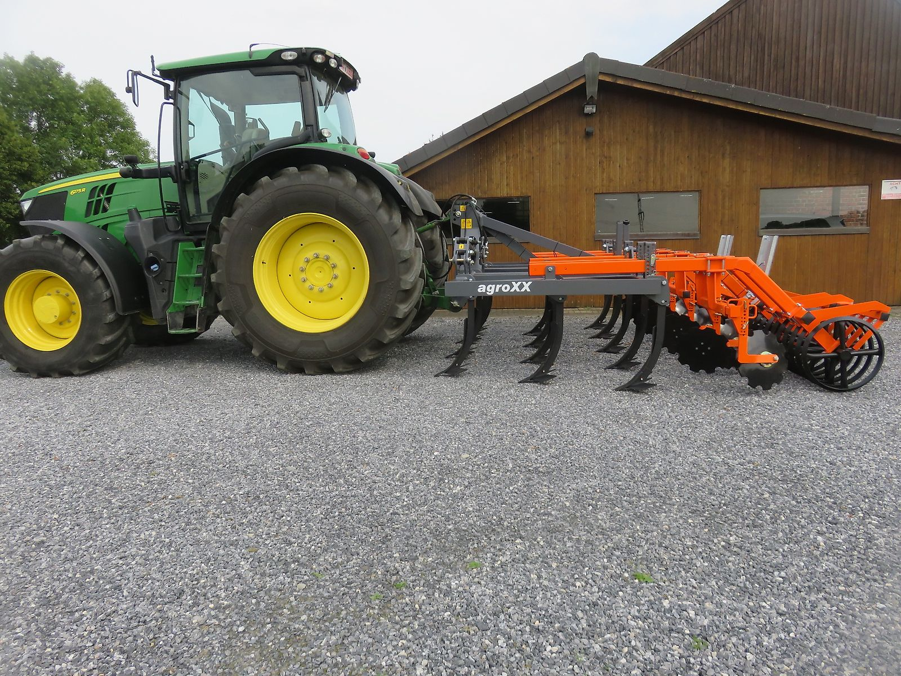

Unser Schwerpunkt
Mulchgrubber TRIPLE-X Premium
Intensive Mischarbeit, sauberes Strohmanagement und zügiges Auslaufen von Ausfallgetreide – für Schlepper von 140 bis 300 PS.
Das steckt im TRIPLE-X
Der agroXX-Premium-Mulchgrubber ist ein Dreibalkengerät mit kräftigem Rahmen und einem durchdachten Zinken- und Scharsystem. Ausgelegt für den ganzflächigen Einsatz bei intensiver Mischarbeit.
- Rahmen: 3 Balken, 100 × 100 mm Rohrrahmen aus S355-Feinkornstahl
- Zinken & Schare: TOPMIX-Zinken- und Scharsystem von Industriehof Scherenbostel
- Flügelschar: 315 mm breit, leicht zu demontieren
- Scharleitbleche: abwechselnd rechts/links gedreht
- Anbau: HD-Dreipunktbock Kat. 2 und 3, verstärkte Arme für den Nachläufer
- Rahmen: 82 cm Rahmenhöhe, 80 cm Rahmenabstand
- Nachläufer: Dachringwalze Premium Ø 600 mm mit Abstreifer (STS-Walze ebenfalls erhältlich)
- Randscheiben: serienmäßig 10 gezackte Hohlscheiben Ø 465 mm, davon 2 teleskopierbare Randscheiben
Modelle & Preise
Das vollständige Mulchgrubberprogramm gibt es von 3,0 bis 4,8 m Arbeitsbreite – mit Abscherschraubensicherung oder voll gefedert.
| Modell | Arbeitsbreite | Zinken | Arbeitstiefe | Nachläufer | Preis netto |
|---|---|---|---|---|---|
| TRIPLE-X 3.0-10 | 3,0 m | 10 | bis 30 cm | Dachringwalze | 7.900 € |
| TRIPLE-X 3.0-13 | 3,0 m | 13 | bis 30 cm | Dachringwalze | 8.400 € |
| TRIPLE-X 4.0-13 | 4,0 m | 13 | bis 30 cm | Dachringwalze | 13.700 € |
| TRIPLE-X 4.8-16 | 4,8 m | 16 | bis 30 cm | Dachringwalze | 16.500 € |
Preise zzgl. 19 % MwSt., Stand 23.10.2026. Weitere Ausführungen (z. B. Rohrstabwalze, STS-U-Ringwalze, voll gefedert) auf Anfrage.
Sonderausrüstung gegen Mehrpreis
| Dachringwalze 600 mm mit aufgeschweißten Stegen | 200 € |
| STS-U-Profilringwalze 600 mm | 650 € |
| Striegelzinkenbalken nach dem Nachläufer, in Höhe und Neigung verstellbar | 1.700 € |
| LED-Beleuchtung und Warntafeln mit verzinkten Spezialhaltern | 250 € |
Alle Preise netto zzgl. 19 % MwSt.
Auch interessant: Speedline 6.0 XC

Großfederzinkenegge mit Herkuleszinken 70 × 12 mm, 6,0 m Arbeitsbreite, bis 12 cm Arbeitstiefe und Rohrstabwalze. Hydraulisch klappbar, mit Steinsicherung.
11.900 € netto · Zum Angebot
Bilder vom TRIPLE-X
Ein Klick auf ein Bild vergrößert es. Mit den Pfeiltasten blättern Sie durch alle Bilder.


Sprechen Sie mit uns.
Welche Maschine passt zu Ihrem Schlepper und Ihren Flächen? Thomas Schalkamp berät Sie gern – am Telefon, per WhatsApp oder direkt bei uns auf dem Hof in Ennigerloh.